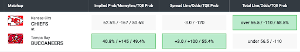

Point Spread
The Point Spread is the number of points by which the winner is expected to win or the loser is expected to lose. You can win a bet on the Point Spread in two ways. If you bet on the favorite, you win the bet if the favorite wins by more points than the Point Spread. If you bet on the underdog, you win the bet if the underdog wins the game or loses by fewer points than the Point Spread. A minus sign (-) indicates the favorite, and a plus sign (+) indicates the underdog.
For example, in a game between the Baltimore Ravens and the Kansas City Chiefs, the Spread is 3.0. If you bet on the Chiefs (-3) and want to win, the Chiefs need to win by more than 3 points. If the Chiefs win by exactly 3 points, it results in a push, meaning you neither win nor lose and your bet is fully refunded. If you bet on the Ravens (+3) and want to win, the Ravens need to win or lose by fewer than 3 points. If the Ravens lose by exactly 3 points, it also results in a push, and you are fully refunded.
In the Ravens vs. Chiefs game, The Quant Edge (TQE) suggests betting on the Chiefs with the Spread, as their proprietary analytics indicate a 61% chance that the Chiefs will win by more than 3 points.
Odds
Before we introduce the types of bets, it is essential to clarify an important criterion behind each bet: odds. Odds represent the likelihood of a particular result and the potential payout of a wager.
Standard odds have a base value of 100 and fluctuate around this base. These odds are generally used when the spread is set at a level where each side has an equal 50/50 chance of winning. When factoring in the "vig" or "juice," standard odds for games are typically -110, meaning you have to risk $110 to win $100. However, the odds can fluctuate (e.g., -120 or +100/Even) depending on the betting volume on either side of a wager. The odds indicate the amount you need to risk or can win based on a $100 bet. For sports like football and basketball, spreads are usually set to give each team an equal chance to cover, resulting in -110 odds on either side. For example, betting on the Chiefs at -110 means you need to risk $110 to win $100 if the Chiefs cover the spread.
For sports like hockey, soccer, and baseball, where the total points scored are much lower, the odds to cover the spread fluctuate more significantly. In these sports, odds for the moneyline or spreads (typically set at -1.5 or +1.5) vary more. For example, if the odds are +190 at -1.5 for the Stars and -230 at +1.5 for the Oilers, betting $100 on the Stars at -1.5 goals and they win by more than 1.5 goals will earn you $190. Conversely, if you bet $100 on the Oilers at +1.5 goals and they lose by more than 1.5 goals, you will lose $230. The moneyline, which predicts who will win the game, also varies significantly. In the example below, the Stars are -130, and the Oilers are +110 in their game against each other.

Moneyline
Moneyline is the simplest type of bet. You win the bet if you successfully pick the winner of the game. If you are betting on a favorite (negative Moneyline), the Moneyline indicates the amount you need to risk to win $100. Conversely, if you are betting on an underdog (positive Moneyline), the odds indicate the amount you will win for every $100 you risk.
From the Moneyline, you are able to calculate the implied probability of either team winning the game.
There is a convenient formula to calculate for the favorite:
Implied Probability = Moneyline Moneyline - 100
There is also a conventional formula to calculate for the underdog:
Implied Probability = 100 100 + Moneyline
Taking the Ravens vs Chiefs as an example,
The implied probability of the Ravens winning, based on the +130 odds, can be calculated as follows:
43.5% = 100 100 + 130
The implied probability of the Chiefs winning, based on the -155 odds, can be calculated as follows:
60.8% = -155 -155 - 100
The probabilities added together will not equal 100% because the bets always factor in some extra percentage as an implied profit for the house or entities that accept the bet.
In the Ravens vs Chiefs example, The Quant Edge suggests you bet on the Chiefs using the Moneyline because our proprietary analytics say the Chiefs have a 66.6% chance of winning the game and that is 5.8% higher than the implied probability based on the betting odds or money line offered.

TOTALS (OVER/UNDER)
Totals is a bet on the combined total points scored by two teams in a game, regardless of which team wins. If you bet the Over, you win if the total points are over the established betting number. If you bet the Under, you win if the total points are under the established betting number.
Using the Ravens vs. Chiefs as an example, let's assume a future game where the final score is Ravens 15 and Chiefs 25, totaling 40 points. In this scenario, a bettor would lose the Over bet (over 47.5) and win the Under bet (under 47.5).

Terminologies
Juice: Also known as the “vig”. Juice is what a sportsbook will charge for taking a bet. The most standard juice is 10%. In this case, the odds will be -110. It means that the sportsbook will get $10 on any losing bets. Winning bets will get paid $100 and on all losing bets, the bettor will have to pay $110 (-110).
Units: refers to the amount of money you bet in a single game.
Parlay: refers to a wager type in which multiple types of bets are linked together. The payout is greater, but you have to win every single bet within this parley to get the final payout. The potential payout can be calculated by multiplying the decimal odds of every bet within.
For example, if you want to bet a parlay on both the Chiefs -120 and Cowboys -150 to both win and you want to risk $100 your potential profit will be roughly $200:
Profit = [ 1 - ( 100 -120 )] x [ 1 - 100 -150 ] - 1 = 2.056
Although profits of different parlays have different final values based on the odds of each game the payouts for parlays on games with standard odds at -110 are fixed because sportsbooks are choosing teams that have the same odds, based on the 50/50 propositions. Therefore, in most Las Vegas sportsbooks, the typical payouts of parlays are listed below:
| Numbers | Odds | Risk | Payout |
|---|---|---|---|
| 2 Team Parlay | 2.6 to 1 | $100 | $360 ($100 risked +$260 profit) |
| 3 Team Parlay | 6 to 1 | $100 | $700 ($100 risked +$600 profit) |
| 4 Team Parlay | 11 to 1 | $100 | $1,200 ($100 risked +$1,100 profit) |
| 5 Team Parlay | 22 to 1 | $100 | $2,300 ($100 risked +$2,200 profit) |
| 6 Team Parlay | 45 to 1 | $100 | $4,600 ($100 risked +$4,500 profit) |
Buying Points: An option in which a bettor can improve the Spread of his/her bet for a more expensive price. For example, the original Spread between Ravens v. Cheifs is 3.0, but you can take Chiefs -2.5 or Ravens +3.5 with a higher price. So, instead of your odds being -110 you will have to risk, potentially lose, a greater amount to “buy” the Spread down to -2.5 or +3.5. The additional risk (i.e. -120 or -130) will be clearly shown in the drop down you use to buy the points.
Middling: A middle is a betting strategy in which a bettor places wagers on both sides of the same bet at different lines, attempting to win both. This can happen if the line moves at any point before the game begins or if a bettor takes a different side at some point during the game (generally at halftime or the end of a quarter) when the odds have changed based on the current/updated score. This is often done to potentially ensure that at least one of the bets will win and hoping the score comes in between the two bets and both bets win.